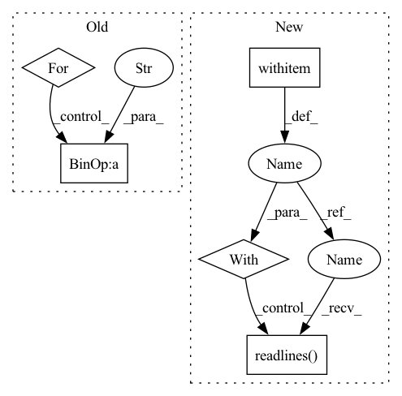

Pattern ID :18981
Before Change
Y_tr.append(label_map[row[1]])
df = pd.read_feather(os.path.join(data_dir, "labels_%s" % type, "labels_test.feather"))
for idx, row in df.iterrows():
//print(row[1])
if row[1] in mini_domain_net_class_ids:
X_te.append(os.path.join(data_dir, "domain_net-real_%s" % type, "test", row[0]))
if row[1] not in label_map:
label_map[row[1]] = len(label_map) + 1
Y_te.append(label_map[row[1]])After Change
X_tr, Y_tr, X_te, Y_te = [], [], [], []
label_map = {}
with open (os.path.join(data_dir, "real_train.txt"), "r") as f:
for item in f.readlines() :
feilds = item.strip()
name, label = feilds.split(" ")
label = int(label)In pattern: SUPERPATTERN
Frequency: 3
Non-data size: 5
Instances Fragment ID: 61762220
Project Name: aminparvaneh/alpha_mix_active_learning
Commit Name: 0ad26d7f57b6b591c8feca0cafb17f63b2756306
Time: 2022-06-27
Author: amin.parvaneh@gmail.com
File Name: dataset.py
M Class Name: AnonimousClass
N Class Name: AnonimousClass
M Method Name: get_Mini_DomainNet_Real(1)
N Method Name: get_Mini_DomainNet_Real(2)
M Parent Class:
N Parent Class:
M File Name: dataset.py
N File Name: dataset.py
M Start Line: 217
M End Line: 241
N Start Line: 204
N End Line: 232
Before Change
X_tr, Y_tr, X_te, Y_te = [], [], [], []
label_map = {}
for idx, row in df.iterrows():
if row[1] in tiny_domain_net_class_ids:
X_tr.append(os.path.join(data_dir, "domain_net-real_%s" % type, "train", row[0]))
if row[1] not in label_map:
label_map[row[1]] = len(label_map)
Y_tr.append(label_map[row[1]])After Change
X_tr, Y_tr, X_te, Y_te = [], [], [], []
label_map = {}
with open (os.path.join(data_dir, "real_train.txt"), "r") as f:
for item in f.readlines() :
feilds = item.strip()
name, label = feilds.split(" ")
label = int(label) Fragment ID: 61762214
Project Name: aminparvaneh/alpha_mix_active_learning
Commit Name: 0ad26d7f57b6b591c8feca0cafb17f63b2756306
Time: 2022-06-27
Author: amin.parvaneh@gmail.com
File Name: dataset.py
M Class Name: AnonimousClass
N Class Name: AnonimousClass
M Method Name: get_Tiny_DomainNet_Real(1)
N Method Name: get_Tiny_DomainNet_Real(2)
M Parent Class:
N Parent Class:
M File Name: dataset.py
N File Name: dataset.py
M Start Line: 244
M End Line: 268
N Start Line: 235
N End Line: 263
Before Change
data = self.load_text_file()
concatenate_text = ""
for line in data:
line = line.strip()
concatenate_text += line + " "
concatenate_text = concatenate_text.strip()
self.vocab = list(set(concatenate_text.split()))
After Change
indices = []
data = []
vocabulary = {}
with open (self.file_name, "r") as filino:
docs = filino.readlines()
for d in docs:
for term in d.split():
index = vocabulary.setdefault(term, len(vocabulary)) Fragment ID: 61762210
Project Name: milanlproc/contextualized-topic-models
Commit Name: 06e8fbee8e3be72841f4aac15b1f43bd6821ffee
Time: 2020-07-30
Author: s.terragni4@campus.unimib.it
File Name: contextualized_topic_models/utils/data_preparation.py
M Class Name: TextHandler
N Class Name: TextHandler
M Method Name: prepare(1)
N Method Name: prepare(1)
M Parent Class:
N Parent Class:
M File Name: contextualized_topic_models/utils/data_preparation.py
N File Name: contextualized_topic_models/utils/data_preparation.py
M Start Line: 48
M End Line: 64
N Start Line: 51
N End Line: 68